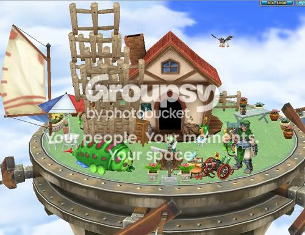

หน้า 107 จากทั้งหมด 276

โพสต์แล้ว:
พุธ 26 มี.ค. 2008 1:45 pmโดย ECO
Nimble เขียน:ทำรั้วได้แล้วววววววววววววววววววววววววววววววววววววววววววววววววววววว
PS : quest 79 ใช้รั้วไม้
พูดจริงอ่า คุณนิม*-*...
/me เตรียมทำรั้วแจกคนในริงฉลอง
โพสต์แล้ว:
พุธ 26 มี.ค. 2008 2:06 pmโดย ECO
จู่มันก็โผล่มาในrecipe เหมือยเสกมาเลย... สงสัย พรมมันโดนเสกหายไป
ตอนนี้ ขอเป็นอันซึต่อดีกว่า ไม่ทำเควสต่อแระ เป็นแมวแล้วน่าร๊ากกกก
โพสต์แล้ว:
พุธ 26 มี.ค. 2008 3:16 pmโดย ECO
crystalcross เขียน:จู่มันก็โผล่มาในrecipe เหมือยเสกมาเลย... สงสัย พรมมันโดนเสกหายไป
ตอนนี้ ขอเป็นอันซึต่อดีกว่า ไม่ทำเควสต่อแระ เป็นแมวแล้วน่าร๊ากกกก
แล้วไปเข้า pvp nvn ด้วยละ 55555+
โพสต์แล้ว:
พุธ 26 มี.ค. 2008 4:25 pmโดย ECO
เฮ้อ ชาวนาจะหา row เยอะๆได้ที่ไหนบ้างครับ
แต่ก่อนอาศัยตี yellow pururu ที่ bee hill เอา
เมื่อวานทำใบเรือ 2 แบบ รวม 8 ใบ (ต้องทำให้เพื่อน 1 ชุด) เสีย row ไป 300 กว่าชิ้น - -'
ดีนะที่ยังไม่ได้เอาไปทำเป็น wax ส่งเควส fighter
ปล. เคยมีคนบอกให้ตี lava pururu แต่เอาชาวนาไปตีแล้วไม่ค่อยดรอปเลย
โพสต์แล้ว:
พุธ 26 มี.ค. 2008 4:35 pmโดย ECO
montai เขียน:เฮ้อ ชาวนาจะหา row เยอะๆได้ที่ไหนบ้างครับ
แต่ก่อนอาศัยตี yellow pururu ที่ bee hill เอา
เมื่อวานทำใบเรือ 2 แบบ รวม 8 ใบ (ต้องทำให้เพื่อน 1 ชุด) เสีย row ไป 300 กว่าชิ้น - -'
ดีนะที่ยังไม่ได้เอาไปทำเป็น wax ส่งเควส fighter
ปล. เคยมีคนบอกให้ตี lava pururu แต่เอาชาวนาไปตีแล้วไม่ค่อยดรอปเลย
Orge Jelly ถ้ำปลา 1F
โพสต์แล้ว:
พุธ 26 มี.ค. 2008 5:05 pmโดย ECO
<--- มีโครงการจะเอา alchemist เป็นอันซึตลอดชีพ (เพราะไม่ต้องสิง สิงไม่ได้ สิงแล้ว marionette mastery เป็นหมัน แปลงแล้วเก่งกว่าสิงด้วย)
ตอนเป็นอันซึโดนสิงไม่ได้ แต่สิงคนอื่นยังไม่ได้ลอง :3
รั้วไม้ทำได้จริงๆนะงิ ยัดสวนไปแล้วสองอัน >w<
แต่ bug itemmall รุนแรงกว่าที่คิด npc furniture craftman เลิกขายของที่เป็นของสำเร็จ (รั้วไม้หรือของอื่นๆ)
haleluya ที่ tonka ที่ขายของตามวันโดนเอาออกจากเกมไปเลย (furniture craftman ที่ tonka แถวทางมาจากท่าเรือด้วย หายไปเลย)
เพราะงั้น recipe รั้วบางสีขาว (รั้วบาง+white seriko + bruch) ก็เป็นหมันโดยสมบูรณ์ ยกเว้นจะมีรั้วจากหีบ จากกล่อง จากคอนให้ระบาย
ส่วนพรมลองแล้ว ยังไม่ได้ อย่าเอา fer ไปเสียเปล่า 50 อันแบบหมาละกัน
โพสต์แล้ว:
พุธ 26 มี.ค. 2008 5:30 pmโดย ECO
Nimble เขียน:
ตอนเป็นอันซึโดนสิงไม่ได้ แต่สิงคนอื่นยังไม่ได้ลอง :3
สิงคนอื่นได้ครับ
ผมเล่นเผ่า อีมิล ขึ้นชั้น 5 ไม่ได้
เลยเอาตัวเผ่า โดมิเนี่ยนของแฟนมายืมสิง อ่ะ
โพสต์แล้ว:
พุธ 26 มี.ค. 2008 5:38 pmโดย ECO
montai เขียน:เฮ้อ ชาวนาจะหา row เยอะๆได้ที่ไหนบ้างครับ
แต่ก่อนอาศัยตี yellow pururu ที่ bee hill เอา
เมื่อวานทำใบเรือ 2 แบบ รวม 8 ใบ (ต้องทำให้เพื่อน 1 ชุด) เสีย row ไป 300 กว่าชิ้น - -'
ดีนะที่ยังไม่ได้เอาไปทำเป็น wax ส่งเควส fighter
ปล. เคยมีคนบอกให้ตี lava pururu แต่เอาชาวนาไปตีแล้วไม่ค่อยดรอปเลย
Larva Pururu ก็ดรอปนะ
ขึ้นชั้น 5 เป็นอีมิลเหมือนกันขึ้นไม่ได้เลยขอคนอื่นสิง (พูดถึงหอคอยที่เปลี่ยนอาชีพปะนิ *-*)
โพสต์แล้ว:
พุธ 26 มี.ค. 2008 5:49 pmโดย ECO
Nimble เขียน:PS : quest 79 ใช้รั้วไม้
รั้วไม้นี่ชื่ออะไรหรือครับ
อันนี้ป่ะ ?? ใช้กี่อันต่อ 1 เควสครับ
.jpg)
โพสต์แล้ว:
พุธ 26 มี.ค. 2008 6:17 pmโดย ECO
วิ่งวุ่นทำเนโกะทั้ง 3 ตัวกว่าจะเสร็จ
ตอนนี้กำลังวุ่นกับการทำบ้านบินได้อีก - -*
คงไม่ได้เก็บเวลไปสักระยะเลยล่ะ - -*
โพสต์แล้ว:
พุธ 26 มี.ค. 2008 7:24 pmโดย ECO
เฟอร์นิเจอร์ลงมอลล์เยอะแยะเลย
กลุ้มจริงๆ เงินจิงๆหายากกว่าเงินในเกมอีกนะนิ
โพสต์แล้ว:
พุธ 26 มี.ค. 2008 7:25 pmโดย ECO
สภาพร้านเฟอนิเจอร์หลังสามารถทำรั้วไม้ได้...

ทำตู้ตามออเดอร์ต่อ- -...
ปล. สีพื้นบนสวนลอยยังไม่รู้ว่าเป็นเพราะอะไร แต่มันจะสีเพี้ยนหลังจากผ่านแมปโมโมทุกครั้งเลย...
โพสต์แล้ว:
พุธ 26 มี.ค. 2008 7:57 pmโดย ECO
ทำยังไงให้นกมันไปลอยอยู่บนฟ้าอ่ะคับ
โพสต์แล้ว:
พุธ 26 มี.ค. 2008 8:15 pmโดย ECO
ใช่..เพี้ยนจริงๆ แต่เป็นวิธีการแต่งบ้านนะ เยี่ยมมาก - -
โพสต์แล้ว:
พุธ 26 มี.ค. 2008 8:24 pmโดย ECO
jib001 เขียน:
สิงคนอื่นได้ครับ
ผมเล่นเผ่า อีมิล ขึ้นชั้น 5 ไม่ได้
เลยเอาตัวเผ่า โดมิเนี่ยนของแฟนมายืมสิง อ่ะ
เผ่า emil ก้อขึ้นได้คับ แต่ต้องขึ้นตอนแปลงร่างเป็นมาริโอเนต จะเป็นตัวไหนก้อได้คับ แล้วชั้น 5 ก้อจะขึ้นมาให้เลือกเองงับ